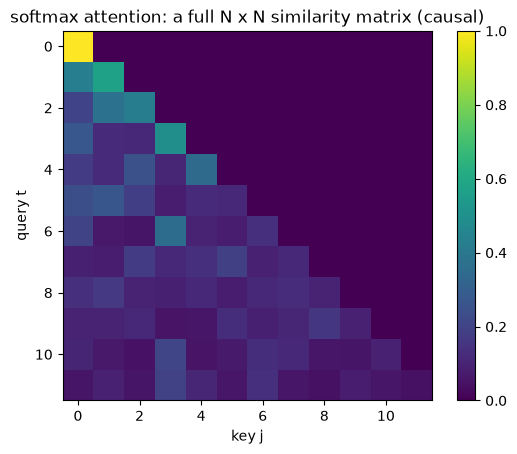
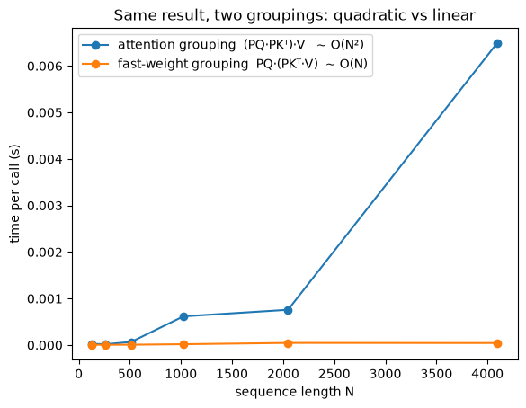

The question: what happens to attention if you delete the softmax?
Third module of the foundations spine. Runs on CPU in seconds; PyTorch throughout.
M2 built a fast-weight programmer from the Schmidhuber side: a slow net writes an outer-product memory \(\mathcal{M}_t=\mathcal{M}_{t-1}+\mathbf{v}_t\mathbf{k}_t^\top\). M3 reaches the same object from the Transformer side — take ordinary attention, delete the softmax, and the whole “attend to every past token” sum collapses into exactly that matrix. So a linear Transformer is secretly an RNN with a matrix memory, and that memory is M2’s fast weights.
Prerequisite math — effective rank / capacity and orthogonality (what the feature map \(\phi\) buys) are in the linear-algebra primer §1, §3.
Objective
After this module you should be able to:
Rebuild softmax self-attention from query/key/value and read it as content-addressable lookup — and see why softmax makes recall sharp but costs \(O(N^2)\) and a growing KV cache.
Write attention as a kernel\(\mathrm{sim}(\mathbf{q},\mathbf{k})\) and see that softmax is the one specific kernel (\(\exp\)) that forbids factorization — which is why real attention must keep every token.
Replace the kernel with a factorizable feature map \(\mathrm{sim}(\mathbf{q},\mathbf{k})=\phi(\mathbf{q})^\top\phi(\mathbf{k})\) and use associativity to collapse the \(O(N^2)\) token-by-token sum into a single fixed-size matrix \(\mathbf{S}=\sum_j\phi(\mathbf{k}_j)\mathbf{v}_j^\top\).
Recognize that \(\mathbf{S}\)is M2’s fast-weight memory\(\mathcal{M}\) — same outer-product write — so linear attention = fast-weight programmer = a linear RNN. Three names, one recurrence.
Switch between the parallel form (train like a Transformer, \(O(N^2)\)) and the recurrent form (infer like an RNN, \(O(1)\) per token) and verify they compute the identical function.
Explain where the feature map \(\phi\) buys back the capacity from M2’s capacity law, and what it costs.
Why it exists (the limitation it fixes)
M2 left us with a working fast-weight layer and no reason to trust it. It was an orphan mechanism: an outer-product memory that Schmidhuber proposed in 1992, justified on its own terms, with no stated relationship to the architecture that actually went on to win everything. Nothing in M2 tells you whether the fast-weight write is a curiosity or a necessity — and that open question from M1’s §4 callout is still sitting there: what exactly makes something “linear attention,” and how does it relate to the Transformer you already know?
M3 repairs that by deriving M2’s memory from the Transformer instead of postulating it. Take softmax self-attention (Vaswani et al., 2017), remove exactly one operation, and M2’s write is what falls out — not an alternative to attention but what attention is once you stop paying for the softmax. The orphan gets a parent.
The operation is worth removing on its own merits. Softmax attention computes a similarity between every pair of positions: an \(N\times N\) matrix for a length-\(N\) sequence. That is \(O(N^2)\) time and memory, and autoregressive decoding makes it worse — each new token attends to all previous tokens, so you cache every past key and value (the KV cache grows without bound). This is the scaling wall of Transformers.
The fix is almost embarrassingly simple: remove the softmax. Once the pairwise similarity factorizes, the sum over past tokens re-associates into a running matrix you can carry forward — constant memory, linear time. And that running matrix is precisely the fast-weight memory M2 already built.
Two groups walked into this from opposite doors, which is why the identity is worth a module of its own. Katharopoulos et al. (2020) came from the efficiency side — they wanted attention to stop costing \(O(N^2)\), found the collapse, and noticed the result was an RNN; they say nothing about fast weights. A year later, Schlag, Irie & Schmidhuber (2021) came from Schmidhuber’s own side and proved the two are formally the same object — the “secretly” in their title is doing real work, reporting a connection that the efficiency line had not seen. M3 is where the two lineages turn out to be one thing.
Core idea — take attention apart, then put it back cheap
The whole module is one move: write attention with a general similarity kernel, notice that softmax is the single kernel that blocks factorization, and swap it for a factorizable feature map \(\phi\). The instant you do, the “attend to every past token” sum re-associates into one fixed-size matrix — and that matrix is M2’s fast-weight memory.
So we go in order, building the thing before we break it:
§1–§2 — rebuild original (softmax) attention from query/key/value and feel its cost.
§3 onward — delete the softmax and watch linear attention / fast weights fall out, then the parallel↔︎recurrent duality and the price of going linear.
Reading
Linear Transformers (Transformers are RNNs) — §3.2 (Linearized Attention: the kernel factorization), §3.2.1 (the feature map \(\phi=\mathrm{elu}+1\), Eq. 7), §3.4 (Transformers are RNNs: the recurrence \(s_i=s_{i-1}+\phi(x_iW_K)(x_iW_V)^\top\), Eq. 18). The grounding source.
FWP §3.1–§3.2 — the same identity reached from the fast-weights side — and §4.1, the capacity analysis we tie back to.
Transformer Dissection (Tsai et al., 2019) §3 — where §3’s general-kernel formulation comes from, one step upstream of the linearization.
1. Attention, from scratch — query, key, value
One self-attention layer — the scaled dot-product attention of Vaswani et al. (2017) — turns each token \(\mathbf{x}_t\) into three roles via learned projections:
query\(\mathbf{q}_t = W_Q\mathbf{x}_t\) — what position \(t\) is looking for,
key\(\mathbf{k}_t = W_K\mathbf{x}_t\) — the handle position \(t\) advertises to others,
value\(\mathbf{v}_t = W_V\mathbf{x}_t\) — the content it contributes if attended to.
\(W_Q,W_K,W_V\) are trained once and frozen at inference — they are exactly M2’s slow weights, the fixed program. Position \(t\) compares its query against every key with a scaled dot product, turns those scores into weights with a softmax (non-negative, summing to 1), and reads out the weighted average of values:
Read it as content-addressable, soft dictionary lookup: the query retrieves a blend of the values whose keys it matches. Softmax makes it a competition — the best-matching key dominates, the rest are suppressed. That sharp, winner-take-most selection is exactly what makes softmax attention so good at exact recall — and the property we sacrifice when we linearize. (\(t\le\) enforces causality: position \(t\) sees only the past.)
The cell builds this from a raw input \(X\), one step at a time, then checks the intuition: a query deliberately aligned with one key should pull out that key’s value almost alone.
import torchimport torch.nn as nnimport torch.nn.functional as Fimport matplotlib.pyplot as pltimport timetorch.manual_seed(0)N, d_model, d, m =12, 16, 8, 8X = torch.randn(N, d_model) # a sequence of N tokensW_Q = nn.Linear(d_model, d, bias=False) # SLOW weights -- M2's fixed programW_K = nn.Linear(d_model, d, bias=False)W_V = nn.Linear(d_model, m, bias=False)Q, K, V = W_Q(X), W_K(X), W_V(X) # project each token into its three rolesdef softmax_attention(Q, K, V, causal=True): N, d = Q.shape scores = (Q @ K.t()) / d**0.5# (N, N) pairwise similaritiesif causal: mask = torch.triu(torch.ones(N, N, dtype=torch.bool), diagonal=1) scores = scores.masked_fill(mask, float('-inf')) A = scores.softmax(dim=-1) # row-normalized weights (each row sums to 1)return A @ V, A # weighted average of valuesO, A = softmax_attention(Q, K, V)print("X:", tuple(X.shape), "-> Q,K,V:", tuple(Q.shape), tuple(K.shape), tuple(V.shape))print("attention weights A:", tuple(A.shape), " rows sum to 1:", torch.allclose(A.sum(-1), torch.ones(N)))print("output O:", tuple(O.shape))# Intuition: a query pointed straight at key 5 should retrieve mostly value 5 (non-causal probe).q = K[5:6] *6.0w = ((q @ K.t()) / d**0.5).softmax(-1)rel = ((w @ V) - V[5:6]).norm() / V[5:6].norm()print(f"\nquery aligned with key 5 -> weight on token 5 = {w[0,5]:.2f} (uniform would be {1/N:.2f})")print(f"retrieval error vs value[5] = {rel:.2f} -> softmax concentrates on the matching key")
X: (12, 16) -> Q,K,V: (12, 8) (12, 8) (12, 8)
attention weights A: (12, 12) rows sum to 1: True
output O: (12, 8)
query aligned with key 5 -> weight on token 5 = 0.81 (uniform would be 0.08)
retrieval error vs value[5] = 0.13 -> softmax concentrates on the matching key
NoteQ: Why are there two sums in the §1 attention formula (\(A_{tj}\))? It looks redundant / wrong.
Not wrong, and not redundant — they’re two different operations that happen to range over the same positions, which is exactly why they carry different dummy indices (\(j\) and \(l\)):
\[\mathbf{o}_t=\underbrace{\sum_{j\le t}}_{\substack{\text{(outer)}\\\text{mix the values}}}\;\underbrace{\frac{\exp(\mathbf{q}_t^\top\mathbf{k}_j/\sqrt d)}{\underbrace{\sum_{l\le t}\exp(\mathbf{q}_t^\top\mathbf{k}_l/\sqrt d)}_{\text{(inner) normalizer }Z_t}}}_{A_{tj}}\;\mathbf{v}_j.\]
Inner sum (over \(l\)) is the softmax denominator\(Z_t\) — the “partition function.” It is a sum over all keys \(l\le t\) that produces a single scalar per query \(t\), and exists only to force \(\sum_{j\le t}A_{tj}=1\) (weights that average, not just accumulate).
Outer sum (over \(j\)) is the actual weighted average of values.
The reason the letters differ: \(Z_t\) does not depend on the outer index \(j\), so it’s a constant you can pull out front —
Reusing \(j\) for both would falsely tie the normalizer to the single term being summed; the separate dummy \(l\) says “sum over everything to normalize, independently of which \(j\) you’re currently weighting.” It’s just softmax written in full — exponentiate each score, then divide by the sum of all the exponentials — wrapped around a weighted sum of values.
It’s also exactly the two steps in the code, where the library hides the inner sum:
A = scores.softmax(dim=-1) # the INNER sum: divides each row by that row's exp-sum (= Z_t)out = A @ V # the OUTER sum: mix the values with those normalized weights
(In §3 we keep these two sums explicit but separate — \(\mathbf{S}_t\) is the numerator’s running version, \(\mathbf{z}_t\) the denominator’s — which is what lets each collapse into a fixed-size state.)
Numerator-over-denominator — softmax is §3’s general formula. The cleanest way to see all this: don’t fold the normalizer inside the weight at all. Put the value-mixing in the numerator and the normalizer in the denominator, each as its own sum. Then softmax attention is literally §3’s general-kernel formula with the choice \(\mathrm{sim}(\mathbf{q},\mathbf{k})=\exp(\mathbf{q}^\top\mathbf{k}/\sqrt d)\):
In this shape both sums are over the same dummy \(j\) — no second letter needed, because numerator and denominator are now separate expressions and each binds its own \(j\) independently. (The \(A_{tj}\) form at the top is the same thing with the denominator folded into the weight; that folding is precisely what forces the distinct \(l\), to keep the normalizer from clashing with the outer \(j\). Two notations, identical value.)
This side-by-side is the entire setup for §3. The collapse happens the instant \(\mathrm{sim}\)factors as \(\phi(\mathbf{q}_t)^\top\phi(\mathbf{k}_j)\): then \(\phi(\mathbf{q}_t)\) pulls out of both sums at once —
leaving the fixed-size state \((\mathbf{S}_t,\mathbf{z}_t)\). Softmax’s \(\exp\) does not factor, so nothing pulls out and both sums stay glued to all \(j\le t\) — that’s the §2 cost, seen right here in the formula.
2. Why attention is expensive — it keeps every token
The scores \(A\) form an \(N\times N\) matrix: every query against every key. That is the cost.
Compute/memory: building and storing \(A\) is \(O(N^2)\) — quadratic in sequence length.
Inference: to score the next token you need all past keys and values, so you cache them — the KV cache grows linearly with \(N\), unbounded.
The cell visualizes the object we are paying for: a dense, causal \(N\times N\) triangle. Everything in M3 is about replacing it with something fixed-size.
O, A = softmax_attention(Q, K, V)plt.imshow(A.detach(), cmap="viridis"); plt.colorbar()plt.title("softmax attention: a full N x N similarity matrix (causal)")plt.xlabel("key j"); plt.ylabel("query t"); plt.show()print("A is N x N =", tuple(A.shape), "and grows with N; at inference you cache every past K, V.")print("=> O(N^2) time and memory. That is the wall linear attention removes.")

A is N x N = (12, 12) and grows with N; at inference you cache every past K, V.
=> O(N^2) time and memory. That is the wall linear attention removes.
3. Delete the softmax — associativity collapses the sum
Write attention with a general similarity kernel instead of the specific softmax one:
Reading attention this way — as a kernel applied to pairs of inputs, with softmax just one choice of kernel — is Tsai et al.’s (2019) reframing, and it is the step that makes everything after it possible: once \(\exp\) is a parameter rather than part of the definition, you can ask what other kernels are legal. Katharopoulos et al. build directly on it.
Softmax is the choice \(\mathrm{sim}(\mathbf{q},\mathbf{k})=\exp(\mathbf{q}^\top\mathbf{k}/\sqrt d)\). The exponential of a dot product does not split into a \(\mathbf{q}\)-part times a \(\mathbf{k}\)-part — so you are stuck with all \(N^2\) similarities and must keep every token (that was §2).
Now demand a kernel that does split: a feature map \(\phi\) with \(\mathrm{sim}(\mathbf{q},\mathbf{k})=\phi(\mathbf{q})^\top\phi(\mathbf{k})\). This is Katharopoulos et al.’s (2020) move, §3.2 — take the kernel view and impose factorization on it. Substitute and pull \(\phi(\mathbf{q}_t)\) out of the sum (associativity of the matrix product):
The “sum over all past tokens” has collapsed into one fixed-size matrix\(\mathbf{S}_t\) (plus a normalizer \(\mathbf{z}_t\)). You no longer store tokens — you store their accumulated outer products. Incrementally:
— which is M2’s fast-weight write, the only change being that the raw key passes through \(\phi\) first.
The cell makes the collapse concrete. With \(\mathrm{sim}=\phi(\mathbf{q})^\top\phi(\mathbf{k})\) the same numbers group two ways: \((\Phi_Q\Phi_K^\top)\,V\) builds the \(N\times N\) scores first (quadratic), while \(\Phi_Q\,(\Phi_K^\top V)\) builds the small \(\mathbf{S}=\Phi_K^\top V\) first (linear). For non-causal attention they are algebraically identical — same result, and \(\mathbf{S}\) is fixed-size regardless of \(N\).
def phi(x):# feature map: elu(x)+1 -> strictly positive, so similarities stay non-negativereturn F.elu(x) +1.0def linear_attn_two_ways(Q, K, V): PQ, PK = phi(Q), phi(K) # (N, p)# (a) attention grouping: build the N x N score matrix, then mix values O_quad = (PQ @ PK.t()) @ V # (N,N) intermediate# (b) fast-weight grouping: build S = sum_j phi(k_j) v_j^T first, then read S = PK.t() @ V # (p, m) <-- fixed size, independent of N O_lin = PQ @ Sreturn O_quad, O_lin, SO_quad, O_lin, S = linear_attn_two_ways(Q, K, V)print("same function, two groupings -> identical:", torch.allclose(O_quad, O_lin, atol=1e-5))print("attention grouping forms an N x N =", (N, N), "matrix")print("fast-weight grouping forms S =", tuple(S.shape), "(p x m) -- size does NOT grow with N")
same function, two groupings -> identical: True
attention grouping forms an N x N = (12, 12) matrix
fast-weight grouping forms S = (8, 8) (p x m) -- size does NOT grow with N
NoteQ: Does softmax forbid the collapse because it’s a sharp, winner-take-most competition?
Half right — and the half that’s off is worth pulling apart, because softmax has two separate properties and only one of them is the obstruction.
Sharp competition (winner-take-most) — real, and it’s why softmax recalls exactly: the normalized exponential piles weight onto the best-matching key. This is the property §6’s probe shows linear attention losing (the dd=64 cell in §6 drives it home: softmax error → 0.000, exact recall).
Non-factorizability — this is what blocks the collapse. The sum collapses (§3) only if the score splits as \(\mathrm{sim}(\mathbf{q},\mathbf{k})=\phi(\mathbf{q})^\top\phi(\mathbf{k})\) — a \(\mathbf{q}\)-part times a \(\mathbf{k}\)-part — so you can pull \(\phi(\mathbf{q}_t)\) out of the sum. The softmax score \(\exp(\mathbf{q}^\top\mathbf{k}/\sqrt d)\)does not split. That’s a purely algebraic fact about the exponential of a dot product; it has nothing to do with how peaked the weights are.
The clean test that separates them: crank the softmax temperature. \(\exp(\mathbf{q}^\top\mathbf{k}/\tau)\) with large \(\tau\) gives a nearly uniform distribution — no winner at all — yet it still cannot be collapsed to a finite-size state. Sharpness changed; collapsibility didn’t. So sharpness is not the cause.
But the instinct isn’t wrong — the two share a root. The exponential kernel corresponds to an infinite-dimensional feature map: \(\exp(\mathbf{q}^\top\mathbf{k})=\sum_{n\ge 0}\frac{(\mathbf{q}^\top\mathbf{k})^n}{n!}\) — polynomial features of every degree. That single fact does both jobs at once:
infinite dimension is why it can’t be written as a finite \(\phi(\mathbf{q})^\top\phi(\mathbf{k})\) → no finite-state collapse, and
infinite dimension is why it can carve out one key arbitrarily sharply → exact recall.
A finite feature map \(\phi:\mathbb{R}^d\to\mathbb{R}^p\) is a finite-rank approximation of that kernel: it buys the \(O(N)\) collapse and pays in sharpness — only \(\sim p\) associations fit before outer products superpose and interfere (§6’s lossy recall; M2’s capacity law). So the right mental model is: sharpness and non-collapsibility are siblings — both children of the infinite-dimensional exp kernel — not cause and effect. Linearizing trades the infinite dimension (sharp, uncollapsible) for a finite one (blurrier, collapsible).
4. That matrix \(\mathbf{S}\) is M2’s fast-weight memory
Look again at \(\mathbf{S}=\sum_j\mathbf{v}_j\phi(\mathbf{k}_j)^\top\) — a sum of outer products of values and (feature-mapped) keys. That is exactly M2’s write \(\mathcal{M}_t=\mathcal{M}_{t-1}+\mathbf{v}_t\mathbf{k}_t^\top\), with \(\mathbf{k}\mapsto\phi(\mathbf{k})\). The “linear Transformer” and the “fast-weight programmer” are the same object; M2 reached it by asking how to write a memory, M3 by asking how to make attention cheap.
The cell rebuilds the causal linear attention as M2’s per-token loop — initialize \(\mathbf{S}=0\), write one outer product per token, read with the query — and confirms it matches the masked parallel form. This loop is identical in shape to M2’s FWPLayer.forward; the only new ingredient is \(\phi\).
def linear_attn_recurrent(Q, K, V):# M2's fast-weight loop, with phi on the keys/queries. Causal by construction. PQ, PK = phi(Q), phi(K) p, mdim = PK.shape[1], V.shape[1] S = torch.zeros(mdim, p) # fast-weight memory M, fresh per sequence z = torch.zeros(p) # running key-sum for the normalizer outs = []for t inrange(Q.shape[0]): S = S + torch.outer(V[t], PK[t]) # WRITE: one outer product (M2's update, k -> phi(k)) z = z + PK[t] num = S @ PQ[t] # READ: query the memory outs.append(num / (z @ PQ[t] +1e-6))return torch.stack(outs)def linear_attn_parallel_causal(Q, K, V):# same thing as one masked matmul (the training-time form) PQ, PK = phi(Q), phi(K) scores = PQ @ PK.t() # (N, N), unnormalized mask = torch.tril(torch.ones(N, N)) scores = scores * mask num = scores @ V den = (scores.sum(dim=-1, keepdim=True)) +1e-6return num / denO_rec = linear_attn_recurrent(Q, K, V)O_par = linear_attn_parallel_causal(Q, K, V)print("recurrent fast-weight loop == parallel masked form:", torch.allclose(O_rec, O_par, atol=1e-5))print("the per-token loop IS M2's FWPLayer.forward, with k -> phi(k). Same recurrence, new name.")
recurrent fast-weight loop == parallel masked form: True
the per-token loop IS M2's FWPLayer.forward, with k -> phi(k). Same recurrence, new name.
NoteQ: Write the boxed recurrence from memory, and point to exactly where it is M2’s fast-weight write.
Term by term: each token adds one outer product\(\mathbf{v}_t\phi(\mathbf{k}_t)^\top\) into the matrix \(\mathbf{S}_t\in\mathbb{R}^{m\times p}\) — store the association “key \(\phi(\mathbf{k}_t)\Rightarrow\) value \(\mathbf{v}_t\)” — and a query reads it back as a matrix–vector product \(\mathbf{S}_t\phi(\mathbf{q}_t)\).
Where it’s M2’s write — literally the same line, with \(\mathbf{k}\mapsto\phi(\mathbf{k})\). M2’s FWPLayer wrote
the “elementary programming instruction” — an additive outer product into the fast weights. M3’s recurrence is that identical instruction with the raw key replaced by a feature-mapped key \(\phi(\mathbf{k}_t)\) (and the optional denominator \(\mathbf{z}_t\) that M2 dropped in favor of F.normalize-ing \(\mathbf{k},\mathbf{q}\)). So the dictionary is exact:
M3 (linear attention)
M2 (fast-weight programmer)
role
\(\mathbf{S}_t\)
\(\mathcal{M}_t\)
fast weights — the memory, rewritten every token, reset per sequence
\(\mathbf{v}_t\phi(\mathbf{k}_t)^\top\)
\(\mathbf{v}_t\mathbf{k}_t^\top\)
the outer-product write (one programming instruction)
\(W_Q,W_K,W_V\) (and \(\phi\))
\(W_q,W_k,W_v\)
slow weights — the fixed program that invents \(\mathbf{k},\mathbf{v},\mathbf{q}\)
In code it’s visible directly: the linear_attn_recurrent cell above runs S = S + torch.outer(V[t], PK[t]) with PK = phi(K) — character-for-character M2’s M = M + torch.outer(v, k). Linear attention is the fast-weight write; the only new symbol is \(\phi\).
5. Two faces of one computation: \(O(N^2)\) parallel vs \(O(N)\) recurrent
This is the practical payoff and the duality at the heart of every modern linear-attention / SSM model:
Parallel form (training): one big masked matmul over all positions — fully parallel on a GPU, but materializes the \(N\times N\) scores, so \(O(N^2)\).
Recurrent form (inference): carry the fixed \(p\times m\) state \(\mathbf{S}\) and update one token at a time — \(O(1)\) memory and time per token, \(O(N)\) total, no growing KV cache.
Same math, two schedules. The cell times the two non-causal groupings from §3 as \(N\) grows — the attention grouping curves up quadratically, the fast-weight grouping stays linear.
def time_grouping(N, d=32, m=32, reps=5): Q, K, V = torch.randn(N, d), torch.randn(N, d), torch.randn(N, m) PQ, PK = phi(Q), phi(K)# quadratic: (PQ PK^T) V t0 = time.perf_counter()for _ inrange(reps): _ = (PQ @ PK.t()) @ V t_quad = (time.perf_counter() - t0) / reps# linear: PQ (PK^T V) t0 = time.perf_counter()for _ inrange(reps): _ = PQ @ (PK.t() @ V) t_lin = (time.perf_counter() - t0) / repsreturn t_quad, t_linNs = [128, 256, 512, 1024, 2048, 4096]tq, tl =zip(*[time_grouping(n) for n in Ns])plt.plot(Ns, tq, marker="o", label="attention grouping (PQ·PKᵀ)·V ~ O(N²)")plt.plot(Ns, tl, marker="o", label="fast-weight grouping PQ·(PKᵀ·V) ~ O(N)")plt.xlabel("sequence length N")plt.ylabel("time per call (s)")plt.title("Same result, two groupings: quadratic vs linear")plt.legend()plt.show()print(f"at N={Ns[-1]}: attention grouping {tq[-1] / tl[-1]:.0f}x slower than fast-weight grouping")

at N=4096: attention grouping 152x slower than fast-weight grouping
NoteQ: The parallel ↔︎ recurrent duality: which form trains, which infers, and why do they give the same function?
Both forms compute the same causal sum \(\mathbf{o}_t\propto\sum_{j\le t}\big(\phi(\mathbf{q}_t)^\top\phi(\mathbf{k}_j)\big)\mathbf{v}_j\) — they just schedule the arithmetic differently.
Parallel form — for training. Build the masked score matrix in one shot: \(\mathbf{O}=\mathrm{tril}(\Phi_Q\Phi_K^\top)\,V\). Every position is computed at once, so it saturates a GPU — but it materializes the \(N\times N\) scores, hence \(O(N^2)\) compute/memory. You use it to train because there’s no sequential dependency to wait on (and autograd flows through one big matmul). This is §4’s linear_attn_parallel_causal.
Recurrent form — for inference. Carry the running state \(\mathbf{S}_t=\mathbf{S}_{t-1}+\mathbf{v}_t\phi(\mathbf{k}_t)^\top\) and read \(\mathbf{o}_t\propto\mathbf{S}_t\phi(\mathbf{q}_t)\), one token at a time: \(O(1)\) memory and time per token, \(O(N)\) total, no growing KV cache. You use it to decode. This is §4’s linear_attn_recurrent — M2’s FWPLayer loop.
Why identical: it’s just associativity + distributivity, reassociated. Grouping \((\Phi_Q\Phi_K^\top)V\) (scores first) versus accumulating \(\sum_{j\le t}\mathbf{v}_j\phi(\mathbf{k}_j)^\top\) then reading (state first) are the same products summed in a different order. The causal mask “\(j\le t\)” is enforced two ways that agree: the tril zeroes future scores in the parallel form, while the recurrence has only seen tokens up to \(t\) when it emits \(\mathbf{o}_t\). §4’s cell checked it: O_rec == O_par → allclose True.
The deeper reason it’s even possible: the additive recurrence has state-Jacobian \(\partial\mathbf{S}_t/\partial\mathbf{S}_{t-1}=I\) — linear and identity. That’s what lets the unroll be reorganized into a single parallel matmul with no vanishing/exploding gradients, unlike a nonlinear RNN whose Jacobian product blows up or decays.
Katharopoulos et al. noticed this duality for one architecture; Dao & Gu (2024) made it the organizing principle. Their structured state space duality (SSD) connects state-space models and attention variants through decompositions of structured semiseparable matrices, so the recurrent ⇔ masked-matmul equivalence stops being a fact about linear attention and becomes a fact about a whole class — which is what let them design Mamba-2’s core layer around the fast schedule. So: train in parallel like a Transformer, run as an \(O(1)\)-memory RNN at inference — same weights, same function.
6. The feature map \(\phi\) — what it buys and what it costs
Two jobs for \(\phi\), both already visible in M1/M2:
Non-negativity for the normalizer. The denominator \(\mathbf{z}_t^\top\phi(\mathbf{q}_t)\) must stay positive to act like a softmax-style average; \(\phi=\mathrm{elu}+1>0\) guarantees it. This is Katharopoulos et al.’s choice (§3.2.1) — they take elu over relu precisely so the gradient does not die for negative inputs. (Many modern variants drop the denominator entirely and instead normalize \(\mathbf{k},\mathbf{q}\) — exactly what M2’s FWPLayer did with F.normalize.)
Capacity. From M2’s capacity law, the memory resolves about as many associations as the key dimension — really the effective rank of the key set. Mapping keys through \(\phi:\mathbb{R}^d\!\to\!\mathbb{R}^p\) with \(p>d\) raises that dimension and spreads correlated keys apart, buying capacity back. DPFP (deterministic parameter-free projection) is one such map — FWP’s own contribution (Schlag et al., 2021, §5.4), combinatorial ReLU features that widen the key space without adding a single learned parameter, proposed there against the capacity problem that Katharopoulos’s \(\mathrm{elu}+1\) leaves open.
The cost is the catch: linear attention’s fixed \(p\times m\) state is lossy where softmax is exact. Superposing many outer products in one matrix causes interference, so exact copy/recall degrades — the same crosstalk wall from M1, now as the defining limitation of the whole family. The cell shows the gap: point the last query straight at one stored key and compare what softmax (§1) vs linear attention (§4) retrieve.
# A copy/recall probe: token 5 carries a distinctive key; the last query asks for its value.torch.manual_seed(1)Nq, dd =40, 16Kp = torch.randn(Nq, dd)Vp = torch.randn(Nq, dd)Qp = torch.randn(Nq, dd)target =5Qp[-1] = Kp[target] *4.0# last query points straight at key 5O_soft, _ = softmax_attention(Qp, Kp, Vp, causal=True)O_lin = linear_attn_recurrent(Qp, Kp, Vp)err_soft = (O_soft[-1] - Vp[target]).norm() / Vp[target].norm()err_lin = (O_lin[-1] - Vp[target]).norm() / Vp[target].norm()print(f"recall error at the targeted query: softmax {err_soft:.3f} linear {err_lin:.3f}")print("softmax isolates the target far more sharply; linear attention superposes -> lossy recall.")print("That loss is the price of O(1) memory, and what M4's delta rule attacks.")
recall error at the targeted query: softmax 0.139 linear 0.957
softmax isolates the target far more sharply; linear attention superposes -> lossy recall.
That loss is the price of O(1) memory, and what M4's delta rule attacks.
# A copy/recall probe with larger dimension: token 5 carries a distinctive key; the last query asks for its value.torch.manual_seed(1)Nq, dd =40, 64Kp = torch.randn(Nq, dd)Vp = torch.randn(Nq, dd)Qp = torch.randn(Nq, dd)target =5Qp[-1] = Kp[target] *4.0# last query points straight at key 5O_soft, _ = softmax_attention(Qp, Kp, Vp, causal=True)O_lin = linear_attn_recurrent(Qp, Kp, Vp)err_soft = (O_soft[-1] - Vp[target]).norm() / Vp[target].norm()err_lin = (O_lin[-1] - Vp[target]).norm() / Vp[target].norm()print(f"recall error at the targeted query: softmax {err_soft:.3f} linear {err_lin:.3f}")print("softmax isolates the target far more sharply; linear attention superposes -> lossy recall.")print("That loss is the price of O(1) memory, and what M4's delta rule attacks.")
recall error at the targeted query: softmax 0.000 linear 0.981
softmax isolates the target far more sharply; linear attention superposes -> lossy recall.
That loss is the price of O(1) memory, and what M4's delta rule attacks.
NoteQ: What does linearizing cost, and what do the two jobs of \(\phi\) buy back?
The cost: lossy superposition. Softmax keeps every token and can isolate any one of them, so recall is exact — but it pays \(O(N^2)\) and an unbounded KV cache. Linear attention throws all of that away into one fixed \(p\times m\) matrix\(\mathbf{S}_t=\sum_{j\le t}\mathbf{v}_j\phi(\mathbf{k}_j)^\top\). Every association is superposed in the same matrix, so once you store more than about \(p\) near-orthogonal keys (really the effective rank of the key set, M2’s capacity law), new writes interfere with old ones and a query returns a contaminated blend instead of the value you wanted. The probe above is exactly this trade: softmax recall error \(0.139\) (and \(\to 0.000\) at \(\texttt{dd=64}\)) vs linear \(0.957\). So the price of \(O(1)\) memory and \(O(N)\) time is exact recall — you can no longer pull out a single stored token cleanly. (M4’s delta rule softens this by editing instead of piling on, but the fixed-size lossiness is inherent to the family.)
What \(\phi\) buys (the two jobs above):
Non-negativity for the normalizer. The denominator \(\mathbf{z}_t^\top\phi(\mathbf{q}_t)\) must stay positive for \(\mathbf{o}_t\) to behave like a weighted average; \(\phi=\mathrm{elu}+1>0\) guarantees it. (Many modern variants drop the denominator entirely and instead \(L_2\)-normalize \(\mathbf{k},\mathbf{q}\) — exactly what M2’s FWPLayer did with F.normalize.)
Capacity / effective rank. Mapping keys through \(\phi:\mathbb{R}^d\to\mathbb{R}^p\) with \(p>d\) (e.g. DPFP’s combinatorial ReLU features) raises the nominal key dimension and spreads correlated keys into more orthogonal directions — recovering effective rank, so more associations fit before they interfere (M1’s crosstalk wall, M2’s capacity law).
Neither job removes the lossiness; they push the wall further out. The exactness gap between softmax and any finite \(\phi\) is the same point as Q1: a finite feature map is a finite-rank approximation of the infinite-dimensional \(\exp\) kernel.
Code walkthrough — linear attention in real code
The recurrence we wrote by hand is the whole of a production linear-attention layer. From linear_attention.py in idiap/fast-transformers, the Linear Transformers paper’s own library — non-causal:
Q, K = feature_map(Q), feature_map(K) # phi = elu(x)+1KV = torch.einsum("nshd,nshm->nhmd", K, V) # S = sum_j phi(k_j) v_j^T (the fast weights)Z =1/ torch.einsum("nlhd,nhd->nlh", Q, K.sum(dim=1)) # normalizer 1 / (phi(q)·z)V_out = torch.einsum("nlhd,nhmd,nlh->nlhm", Q, KV, Z) # o = S phi(q) / (...)
causal_linear_attention.py swaps the one-shot KV for the running\(\mathbf{S}_t\) we built in §4 (a custom CUDA scan), giving the \(O(N)\) inference path.
train_hope.py → SelfModifyingLayer is the same loop in M2’s notation: memory = a_t * memory + update; update is the outer product \(\mathbf{v}_t\phi(\mathbf{k}_t)^\top\).
linearAttention.py — the FWP paper’s own code — is this exact recurrence, written from the fast-weights side; the clearest single file showing “linear attention” and “fast weights” are one loop.
Exit check
Ready for M4 when you can:
Rebuild softmax attention from query/key/value, and say why softmax forbids the collapse but \(\phi(\mathbf{q})^\top\phi(\mathbf{k})\) allows it — and what object the collapse produces.
Write the boxed recurrence \(\mathbf{S}_t=\mathbf{S}_{t-1}+\mathbf{v}_t\phi(\mathbf{k}_t)^\top\) from memory and point to where it is M2’s fast-weight write.
Explain the parallel ↔︎ recurrent duality: which form trains, which infers, and why both give the same function.
State the cost of going linear (lossy superposition / recall) and name the two things \(\phi\) buys.
Next → M4, the delta rule / DeltaNet. Linear attention only ever adds to \(\mathbf{S}\) — §6’s lossy recall is the symptom. M4 replaces the additive write with an error-correcting one: before writing, read what’s already stored for this key and write only the difference. That single change turns the pile-on memory into one that can edit associations — the first real fix to the crosstalk wall we’ve now hit three times.